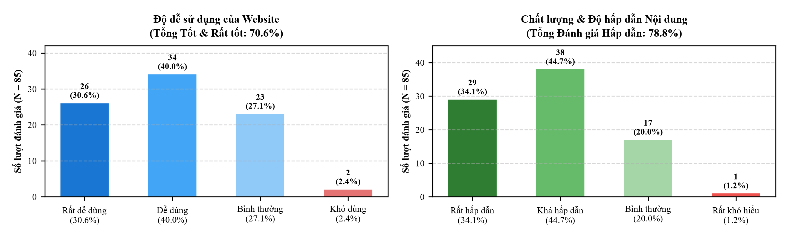

Di sản văn hóa xã Nhã Nam
Địa chí di tích Theo hồ sơ xếp hạng đến 15/02/2026
Nhã Nam xưa là trung tâm vùng Yên Thế Hạ (thuộc huyện Tân Yên trước ngày 01/7/2025; huyện Yên Thế ngày nay là vùng Yên Thế Thượng). Ngày 16/3/1884, thủ lĩnh Lương Văn Nắm (Đề Nắm) tế cờ tại đình Hả, mở đầu khởi nghĩa Yên Thế. Năm 1948, tại chùa Tứ Giáp, Công an Khu XII nhận thư Chủ tịch Hồ Chí Minh nêu Sáu điều dạy Công an nhân dân; thôn Đồng Điều là nơi lập chi bộ Đảng đầu tiên của địa phương. Toàn xã hiện có 37 di tích lịch sử – văn hóa.
Di sản vật thể
8 di tích quốc gia đặc biệt, 1 quốc gia, 7 cấp tỉnh. Tiêu biểu: đình – chùa Hả, chùa Tứ Giáp, đồi Phủ.
Di sản phi vật thể
Lễ hội khởi nghĩa Yên Thế, quan họ, hát chèo, nghề bánh khảo – kẹo lạc, võ cổ truyền, tục nói phét Dương Sơn.

Kho tư liệu di sản Nhã Nam
Xã Nhã Nam (thành phố Bắc Ninh) theo đơn vị hành chính mới được hợp nhất từ 04 đơn vị cũ thuộc huyện Tân Yên, tỉnh Bắc Giang trước ngày 01/7/2025 gồm: Thị trấn Nhã Nam, xã Tân Trung, xã An Dương và xã Liên Sơn.
Toàn xã sở hữu 16 di tích xếp hạng (nằm trong hệ thống 37 di tích lịch sử – văn hóa trên địa bàn xã), trong đó có 08/44 di tích quốc gia đặc biệt của toàn thành phố Bắc Ninh (1.455 di tích toàn tỉnh).
Hệ thống 37 di tích lịch sử – văn hóa xã Nhã Nam
Tổng hợp theo hồ sơ xếp hạng di tích (đến ngày 15/02/2026) và danh mục kiểm kê của UBND tỉnh Bắc Ninh
Di tích quốc gia đặc biệt
Quyết định số 548/QĐ-TTgThuộc hệ thống di tích khởi nghĩa Yên Thế: đình – chùa Hả, đền Gốc Khế, đồi Phủ, đình Dương Lâm, chùa Nam Thiên, đình làng Chuông, đền thờ Cả Trọng, nghĩa địa Pháp
Di tích cấp quốc gia
Quyết định số 138/QĐChùa Tứ Giáp – di tích lịch sử và nghệ thuật, nơi phát tích Sáu điều Bác Hồ dạy Công an nhân dân (11/3/1948)
Di tích cấp tỉnh
Quyết định của UBND tỉnhĐền Đề Truật, đình Cầu Thượng, đình Sậy, chùa Đồng Điều, đình Nẻo, chùa Dương Sơn và đình làng Sặt
Di tích trong danh mục kiểm kê
Danh mục kiểm kêĐược Chủ tịch UBND tỉnh phê duyệt bảo vệ, tiêu biểu như địa điểm lịch sử thôn Đồng Điều (nơi thành lập chi bộ Đảng đầu tiên) cùng các đình, chùa, đền, miếu cổ trên địa bàn xã
Chưa tìm thấy di sản phù hợp
Không có kết quả nào khớp với từ khóa của bạn. Bạn hãy thử tìm kiếm với các từ khóa phổ biến như: "Chùa Tứ Giáp", "Đền Gốc Khế", "Hát chèo", "Bánh khảo" nhé.
Bản đồ số hóa vùng di sản xã Nhã Nam
Ban biên tập gợi ý ba tuyến tham quan cho các buổi học ngoại khóa; bấm vào tuyến hoặc tên di tích để xem vị trí trên bản đồ.
Tuyến 1 (Cội nguồn và kháng chiến): Đình – chùa Hả, chùa Tứ Giáp và đình Dương Lâm
Đình Hả, nơi Đề Nắm tế cờ năm 1884; chùa Tứ Giáp, trụ sở Công an Khu XII năm 1948; đình Dương Lâm, nơi cụ Cai Hậu đào hầm cho nghĩa quân.
Tuyến 2 (Cách mạng và văn hóa): Di tích thôn Đồng Điều, đền Đề Truật và chùa Dương Sơn
Thôn Đồng Điều, nơi lập chi bộ Đảng đầu tiên của địa phương; đền thờ tướng Đề Truật; chùa làng Dương Sơn.
Tuyến 3 (Đồn Nhã Nam và tín ngưỡng): Đền Gốc Khế, đồi Phủ, đình làng Chuông, chùa Nam Thiên và đình Cầu Thượng
Các điểm quanh đồn Nhã Nam cũ: rừng Gốc Khế, đồi Phủ, đình Chuông nơi Đề Thám họp bàn, chùa Nam Thiên (1822) và đình Cầu Thượng.
Góc học tập: Em tìm hiểu di sản Nhã Nam
Mỗi đề 10 câu được bốc ngẫu nhiên từ ngân hàng 40 câu hỏi địa chí Nhã Nam theo 4 phần kiến thức. Chọn một đáp án để biết ngay Đúng/Sai và đọc chú giải tư liệu địa phương.
Cộng đồng yêu di sản Nhã Nam
Kênh kết nối dành cho học sinh THPT, thầy cô và người dân trong xã: chia sẻ ảnh chụp tại di tích, ghi lại chuyện kể của người cao tuổi, học tập và noi gương theo lời Bác dạy.
Minh chứng nghiên cứu
Bản ghi phỏng vấn và số liệu khảo sát được xếp riêng ở cuối trang. Chọn từng mục khi cần xem nội dung chi tiết.
Kho bản ghi âm phỏng vấn sâu Ý kiến của cán bộ văn hóa, giáo viên và học sinh trên địa bàn xã Nhã Nam. Xem chi tiết
CÁN BỘ QUẢN LÝ VĂN HÓA CƠ SỞ
Góc nhìn về công tác quản lý, nguồn tư liệu và tính cấp thiết của chuyển đổi số di sản
Cô Hà – Cán bộ Văn hóa – Xã hội xã Nhã Nam
Đơn vị: UBND xã Nhã Nam
Trích phát biểu: “Nguồn tư liệu di tích của xã trước đây chủ yếu nằm trong hồ sơ xếp hạng và sách lịch sử Đảng bộ xã, chưa có một trang tin chuyên biệt nào. Cán bộ văn hóa kiêm nhiệm nhiều việc nên việc các em học sinh xây dựng Cổng thông tin số hóa là sáng kiến rất quý. UBND xã hoàn toàn ủng hộ và sẵn sàng cung cấp tư liệu chuẩn để các em tích hợp.”
GIÁO VIÊN BỘ MÔN & CÁN BỘ NHÀ TRƯỜNG
Đánh giá về phương pháp dạy học Giáo dục địa phương và hiệu quả kho học liệu số
Cô Trần Thị Oanh – GV Lịch sử
Môn Lịch sử“Tư liệu dạy lịch sử địa phương trước đây rất phân tán. Có website tích hợp bản đồ số, thuyết minh và hình ảnh sắc nét, học sinh hào hứng hẳn lên và nhớ sự kiện sâu sắc hơn.”
Cô Xuyến – GV Ngữ văn
Môn Ngữ văn“Di sản phi vật thể như hát chèo, quan họ và truyện cười Dương Sơn khi có video thực tế đã giúp học sinh cảm nhận được cái hay, cái hồn văn học quê hương một cách tự nhiên.”
Thầy Biên – Cán bộ / GV
Hoạt động trải nghiệm“Nhà trường có thể kết hợp ngay 3 tuyến tham quan GPS và mã QR thực địa để tổ chức các chuyến ngoại khóa liên môn tiết kiệm chi phí mà hiệu quả rất cao.”
Thầy Phương – GV bộ môn
Đổi mới phương pháp“Ngân hàng 40 câu hỏi trắc nghiệm tương tác là điểm sáng lớn, giúp học sinh tự kiểm tra và củng cố kiến thức theo thuyết kiến tạo rất hiệu quả.”
HỌC SINH THCS & THPT
Cảm nhận thực tế của người học trước và sau khi sử dụng website di sản
Em Lan – THCS
THCS“Trước đây tra Google ra rất ít thông tin. Giờ quét mã QR trên điện thoại là xem được ảnh và nghe thuyết minh luôn, rất tiện ạ.”
Em Tường Lam – THCS
THCS“Em thích nhất trò chơi trắc nghiệm 10 câu hỏi, làm xong biết điểm ngay và biết mình đã hiểu đúng về lịch sử Nhã Nam hay chưa.”
Em Nhung – THPT
THPT“Website có bản đồ chỉ đường chi tiết nên chúng em có thể tự rủ nhau đạp xe đi thăm các di tích trong xã vào ngày cuối tuần.”
Em Trang – Lớp 11A4
Lớp 11A4“Em thấy tự hào về truyền thống Yên Thế của quê mình hơn. Em còn chia sẻ link trang web lên Facebook để bạn bè cùng xem.”
Em Tùng – Lớp 10A6
Lớp 10A6“Giao diện trên điện thoại tải nhanh, âm thanh thuyết minh rất rõ ràng, không bị rè hay tạp âm. Em mong dự án cập nhật thêm nhiều video nữa.”
Phản hồi và đánh giá người dùng 70,6% đánh giá dễ sử dụng; 78,8% đánh giá nội dung hấp dẫn. Xem chi tiết
Trước đây, việc dạy và học lịch sử – văn hóa địa phương chủ yếu diễn ra trên lớp theo lối truyền thụ một chiều; tư liệu phân tán, học sinh ít có dịp đối chiếu bài học với di tích thực tế. Với tư liệu số và website, học sinh tự tra cứu, nghe thuyết minh, xem video, xem bản đồ và làm trắc nghiệm trên điện thoại hoặc máy tính, cả trên lớp lẫn tại di tích.
Sau khi cổng thông tin đi vào hoạt động, nhóm tác giả gắn phiếu khảo sát trực tuyến (Google Form) trên website để người dùng tự nguyện đánh giá. Đến đầu tháng 10/2026, phiếu thu được 85 câu trả lời. Kết quả được tổng hợp như sau:
Biểu đồ 3.1: Đánh giá thực tế của người dùng (N = 85) về độ dễ sử dụng và chất lượng nội dung của website
(Nguồn: Nhóm nghiên cứu xây dựng, khảo sát tháng 10–11/2026)

| Tiêu chí đánh giá | Rất tốt / Rất hấp dẫn | Dễ dùng / Khá hấp dẫn | TỔNG TÍCH CỰC | Bình thường | Khó dùng / Rất khó hiểu |
|---|---|---|---|---|---|
| 1. Độ dễ sử dụng giao diện | 30,6% (26 người) | 40,0% (34 người) | 70,6% (60 người) | 27,1% (23 người) | 2,4% (02 người) |
| 2. Chất lượng nội dung thuyết minh | 34,1% (29 người) | 44,7% (38 người) | 78,8% (67 người) | 20,0% (17 người) | 1,2% (01 người) |
Số liệu ở Biểu đồ 3.1 cho thấy phần lớn người dùng đánh giá tích cực về cổng thông tin. Về độ dễ sử dụng, 70,6% người trả lời đánh giá website dễ dùng hoặc rất dễ dùng (30,6% rất dễ dùng; 40,0% dễ dùng), 27,1% đánh giá bình thường và 2,4% thấy khó dùng.
Về chất lượng nội dung, 78,8% đánh giá nội dung hấp dẫn (34,1% rất hấp dẫn; 44,7% khá hấp dẫn), 20,0% đánh giá bình thường và 1,2% thấy rất khó hiểu. Tỷ lệ đánh giá tiêu cực ở cả hai tiêu chí đều dưới 3%. Tuy vậy, 20,0–27,1% người trả lời chỉ đánh giá ở mức bình thường, nghĩa là sản phẩm còn những điểm cần hoàn thiện.
Các cải tiến kỹ thuật nhóm tác giả đã thực hiện dựa trên góp ý:
- Xử lý lại toàn bộ 15 tệp thuyết minh: lọc tạp âm, chuẩn hóa âm lượng theo chuẩn quốc tế (−16 LUFS).
- Nén ảnh để trang tải siêu tốc trên mạng 4G/5G điện thoại di động, sửa lỗi hiển thị trên màn hình nhỏ.
- Bổ sung cẩm nang tham quan 03 tuyến và tích hợp ngân hàng 40 câu hỏi trắc nghiệm tự kiểm tra cho từng hồ sơ di sản.
Phiếu khảo sát người dùng được mở công khai trên Google Form phục vụ nghiên cứu KHKT.
Mở Phiếu Khảo Sát Trực Tuyến (Google Form) ↗